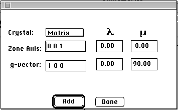

Distributed By: Virtual Labs
Input Poles Dialog Box
PATH...{Stereographic Projection Object}:Pole Figures:Input Poles...
Experimentally, it is often useful to understand the orientation
relationship of a crystal with another crystal or a particular direction
relative to an outside observer such as the rolling direction or the foil
normal. Often, these results are tabulated in the form of a stereographic
map such as a Pole Figure or Texture map. Desktop supports this type of
activity by supplying a method to input crystal orientations using direct
experimental observations in SAD
and CBED patterns transferred directly to a stereogram or by manually
inputting crystal orientations using the Input Poles Dialog Box.

Author: J.ames
T. Stanley
 Desktop
Manual:Dialog Boxes
Desktop
Manual:Dialog Boxes
Distributed By: Virtual Labs
Last Updated:1/12/96 Sat, Apr 27, 1996